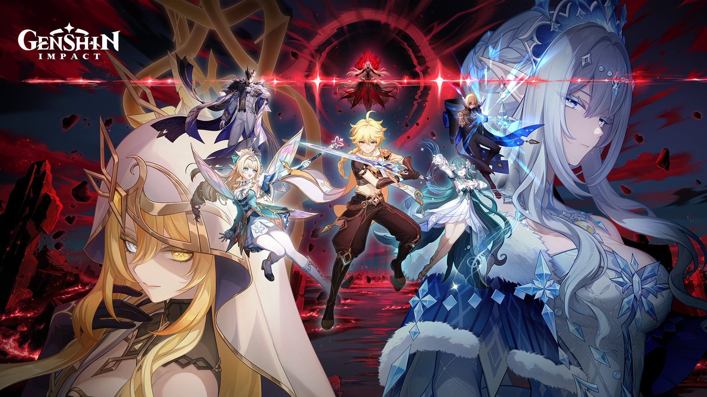
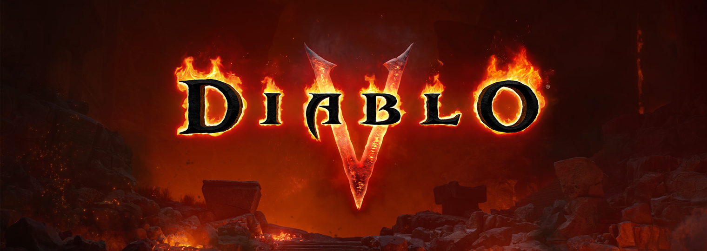
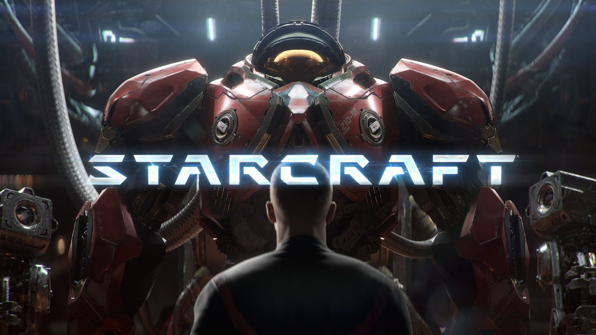
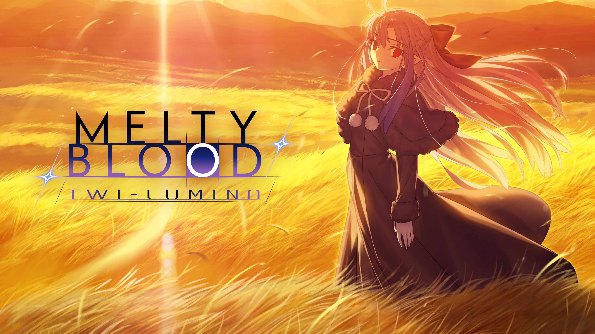

🔥🔥🔥
暗黑破坏神V（Diablo V）世界首发
BlizzCon 开幕公布：庇护之地已陷落，迪亚波罗称王；目标 2029 春发售，平台未宣。
- 日期
- 2026-09-12（美东）/ 09-13 CST 窗
- 库
- 游戏行业 · 展会片单
- 状态
- 世界首发 · 2029 春
今日主线是 BlizzCon 2026 开幕典礼世界首发：暗黑破坏神V（Diablo V）（2029 春）与叙事开放世界射击作 星际争霸（STARCRAFT）（2030 春）；二次元侧补入昨晚 原神 7.1「往冥府的安魂歌」特别节目（9/23 上线）。今日无新旗舰；今日无新 MCP/Skill 推荐。AI / 游戏开发空库未出 Tab。
判定：行业展会日主导；旗舰轴安静。不复述 Nintendo Direct / Zelda Direct / Agents API / DeepSeek-V4.1-Flash / 夜勤人2 / Polyarc。不发涉政。
最高 Attention 落在 BlizzCon 双世界首发与原神 7.1 六周年前瞻；AI 窗内无新 LLM 旗舰、无新 MCP/Skill 推荐。
判定：先推行业+二次元；旗舰轴写清「无」即可，不填版面。
BlizzCon 开幕公布：庇护之地已陷落，迪亚波罗称王；目标 2029 春发售，平台未宣。
暴雪公布故事驱动开放世界射击新作，品牌写作 STARCRAFT；目标 2030 春，平台未宣。
昨 20:00 CST 已播；版本 9/23。新五星薇斯纳 / 沃雅妮莎；六周年首次限定五星自选。
Aniplex / French-Bread 锁 2027-04-22；多平台含 Switch 2；Steam 简中店名仍英文。
二次元主线：原神 7.1 特别节目已播，版本名「往冥府的安魂歌」，9/23 上线并叠六周年福利。
判定：以 Gematsu 转述 miHoYo 英文概览 + 官方特别节目预告交叉；兑换码社区稿不进核心结论。
米哈游于 2026-09-12 20:00 CST 播出 7.1 前瞻特别节目；版本「往冥府的安魂歌」（A Rekviem for the Underworld）定于 9/23 上线，并公布六周年福利与双新五星。

关注度 · 🔥🔥🔥。来源：原神官方 · 7.1 特别节目预告 · Gematsu · 7.1 概览。社区兑换码清单不作文内落款。
行业主线：BlizzCon 2026 Opening 双世界首发（暗黑破坏神V / 星际争霸 STARCRAFT）；补入 MELTY BLOOD: TWI-LUMINA 定档。今日无独立游戏观察新增。
判定：展会片单扛主线；TGS 未开不预写。Physint 转投 Xbox（9/9）窗外，仅观察清单。
暴雪在 BlizzCon 2026 开幕典礼公布《暗黑破坏神V》（2029 春）与故事驱动开放世界射击作《星际争霸》（STARCRAFT，2030 春）；同场还宣布《暗黑破坏神IV：Age of Hatred》合集登陆 Switch 2（9/15）及 Netflix Diablo 动画在研。


| 作品 | 类型 | 档期 / 平台 | 备注 |
|---|---|---|---|
| 暗黑破坏神V（Diablo V） | 世界首发 | 2029 春 · 平台未宣 | 庇护之地已陷落；系列官方译「暗黑破坏神」 |
| 星际争霸（STARCRAFT） | 世界首发 | 2030 春 · 平台未宣 | 故事驱动开放世界射击；系列官方译「星际争霸」；品牌全大写 STARCRAFT |
| 暗黑破坏神IV：Age of Hatred Collection | 新锁（平台） | 2026-09-15 · Switch 2 | $69.99；含本体 + Vessel of Hatred + Lord of Hatred |
| Diablo Netflix 动画 | 另记（非游戏） | 在研 · 细节未宣 | 不单开 Signal |
关注度 · 🔥🔥🔥。来源：Blizzard News · Diablo V · Diablo V 官网 · STARCRAFT 官网 · Gematsu · Diablo V · Gematsu · STARCRAFT · Gematsu · D4 Switch 2。
Aniplex / French-Bread 公布 2D 格斗新作定档 2027-04-22，登陆 PS5 / Switch 2 / PS4 / Xbox One / Switch / PC（Steam）；Steam 简中「名称」仍为英文，按 5.18 留英文不自译。

关注度 · 🔥🔥。来源：Gematsu · Steam app/4113000 · 日文官网。
今日无独立游戏观察新增。